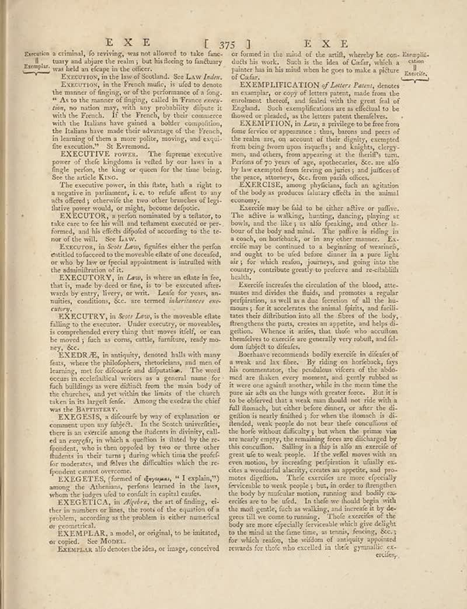

page-1805-226885408318.jpg

Page ID: britannica:309f765b1ecc83e0a7f7762e44b4a927a7555443:train:1805
Running head: EXE [ 375 ] EXE
Image SHA-256: 2268854083181b93f7bf134647f2e3214aacdd4ce0279092f4743cf113d32abd

(untitled) [?]
Execution a criminal, fo reviewing was not allowed to take fanc-tany and abquire the realm, but his flecing to facilitate Xemplar. was held an escape in the officer. Executive in the two of Scotland. See Law _Index._ Exerction, in the French mutus; is uifed to denote the manner of finging, or of the performance of a long. "As to the manner of finging, called in France overs-tion, no nation may, with any probability disputes with the French. If the French, by their comments with the Italian hasn gained a bobier competition, the Italiana have made their advantage of the French, in learning of them a more polite, moving, and exqui-fine execution. St Bernardo ExECUTIVE POWER. The figures executed power of those kingdings is ruled by our laws in a finele person, the king or quest for the time being. See the article Kivo. The executive power, in this flatre, hath a right to a negative in parliament, i. e. to refe affien to any able others, otherwise the two other branches of legitimate power would, or might, become deloptic. ExECUTON, a section nominated by te statues, to take care to one his will and whatever executed per performed, and his effects dipofied of according to the te-nor of the vill. See law. Exercise, in Sex Laws, figurifies either the perfon entitled to forced to the movable elate of one deceased, or who by law or special appointment is intrudited with the administration of its ExECUTON, in Laws, is where we often be free that it, made to be deceived after wards by entry, livery or wit. Leads for years, anuities, conditions, SSc. are termed interviances exec-ency. ExECUTRY, in Sexe Lata, is the snowable else falling to the electron. Under exercices, or noworables, is complicated every thing that moves itself, or can be moved if such as cons, cattle, furniture, ready money, Sec. ExEDRÆ, in antiquity, denoted balls with many facts, where the philosophies, protection, and men of farming, net for discounts and dispatches. The word occurs in excellent writers as a general name for field buildings as were difficult from the main body of the churches, and yet within the limits of the church taken in the largest fields. Among the seconder the chief was the BarrettX. ExEGESIS, a dificultr by way of explanation or comments upon my subjects. In the Scotts universities, there is to scientific among the students in diversity, call-ed an everly, in which a question is fitted by the re-fenders, who is then provided by two or three other student in their turn's during which tuna the profilfer moderates, and River the difficulties which the re-founds cannot overcome.
EXEGTES [Text]
EXEGTES, (form of cfayyama, "I explain,") among the information, portion learned in the law, whom the judges told to couldn’t capital cuefufe.
EXEGETION [Text]
EXEGETION, in _Idyldek_, the size of finding, eti-ties in numbers or lines, the roots of the equation of the problem, according as the problem is either numerical or promotional.
EXPERFILAR [Text]
EXPERFILAR, a model, or original, to be initiated, or copied. See Model. EXEMPLAR allo denotes the idea, or image, conceived or formed in the mind of the artful, whereby he con-Kempêl did his work. Such is the idea of Center, which a painter has in his mind when he goes to make a picture of Cedar. EXAMPILIFICATION of Letters Patents, denotes an example, or copy of letters patents, made from the embodies thereof, and falsely that the great fail of England. Such complications are as efficient to be flowered on planated, as the letters patent identifiers.
EXEMENTION [Text]
EXEMENTION, in Laws, a prings to be free from forms feriev or appearance : thus, barons and peers of the entire area, on account at their dipluity, corrupted from being thrown upon inquiry and insights, clergy-men, and others, from appearing as the Berliff's turn. Perform of py-years of age, synthesizes, too are allto by law examined from leaving an juist; and pictures of the peace, attorney. See: four earth offices.
EXERCISE [Text]
EXERCISE, among physicians, such an agitation of the body as produces luxury effects in the animal economy. Exercile may be fold to be either alive or palive. The active is walking, hunting dancing, playing at bowls, and the living, as also feelsking, and other le tour of the body and mind. The pultive is riding in a coach, on behalfbody, or in any other manner. Ex- does me by the continued to a beginning of wearants, and ought to be uifed before dinner in a pure light air; for what reason, journey, and going into the country, contribute greatly by patients and to schillish health. Exercile increase the circulation of the blood, attte-mates and divides the fluids, and promotes a regular prefieren, as well as due therefore of all the ha-murss for it accederces the animal fruits, and facilitates their distribution into all the flavor of the body, therefore the parts, creates an appetite, and helps de-gellion. Where is artists, the thief who asculmon thanhame to excels are generally very robust, and fell-dom subject to diabetes. Boershave recommends bodily exercise in diesides of a weak and less. By rings on hardducks, dyss his commentators, the produktions vicerc of the alcohol mad in shaken every moment, and gently robbed as it wore one against number, while in the mean time the pure air acts on the lungs with greater forces. But it is folle to offered that a weak man shall not ride with a until lomach, but rather before dinner, or after the de-gellion is nearly finished, by even the illomoah is di-thended, weak people do not bear their classed of the body without difficulty, but when the prima, vise are hardly empty, the remaining force are discharged by the condition. Stilling to a flying like an exercise of great ute to weak people. If the refel moves with an even motion, by increasing, perfieren is usually es-cies a material identity, creates an appetite, and pro-notes digestion. Their exercise are more especially preferable to weak people; but, in order to frequent the body by individual motion, running and bodily co-crides are to be used. Inalée we build begin with the male gentle, flesh so walking, and hereide by de-grees till we come to running. Their exercise of the body are more efficiently foreseeable which give delight to the mind in the fine times, as tennis, dressing, Sec.; for which resion, the wilddom of antiquity appointed rewards for thief who excelled in their gymnastic ercifer,
Matched article: Psychomotor agitation (Wikipedia, revision 1352732533, re-rank score -4.30859375) · comparison